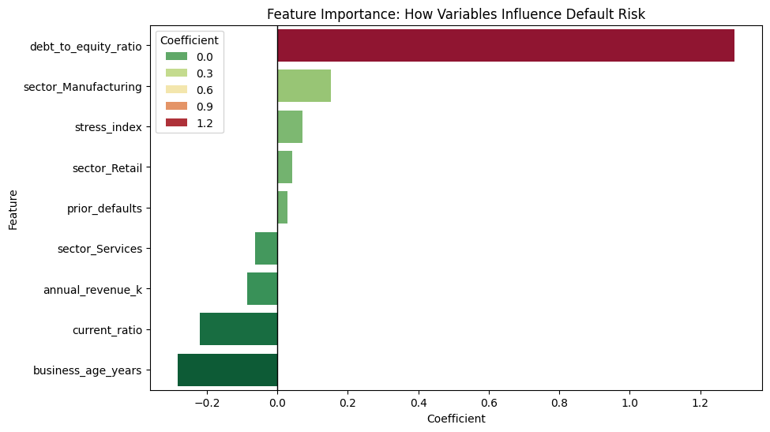

Quantifying Credit Risk: A Machine Learning Approach to MSME Default Prediction

In the lending world, particularly for MSMEs, the ability to accurately quantify risk is the difference between a healthy portfolio and a financial crisis. This project demonstrates a complete end-to-end Credit Risk Quantification workflow, moving from raw financial data to a deployable Probability of Default (PD) model. By utilizing Logistic Regression and Weight of Evidence principles, I identified the key financial levers that drive business failure and proposed actionable mitigation strategies.
Business Problem
Lending to MSMEs involves navigating sparse data environments. Unlike retail banking, small business health is highly sensitive to leverage and sector specific shocks. The goal of this project was to build a model that can:
- Quantify the likelihood of default over a 12-month horizon.
- Provide interpretable insights for a Credit Risk Committee.
- Establish a data driven framework for setting credit limits.
Methodology
Feature Engineering
I focused on four primary dimensions of financial health:
- Leverage: Debt-to-Equity (D/E) Ratio.
- Liquidity: Current Ratio (Assets/Liabilities).
- Operational Stability: Business Age and Annual Revenue.
- Macro & Systemic Risk: Industry Sector classification.
Statistical Validation
Before fitting the model, I utilized Correlation Matrices and Kernel Density Estimate (KDE) plots to ensure the features had discriminatory power. For instance, the data revealed a clear crossover point in the D/E ratio where the density of defaults began to outweigh healthy loans.
Model Results and Interpretation
I employed a Logistic Regression model with balanced class weights to account for the relative rarity of default events.
Model Performance
The model achieved an AUC-ROC score of 0.76, indicating an good ability to distinguish between high risk and low risk borrowers. The confusion matrix showed a high capture rate for defaults, which is critical for minimizing the bank's Loss Given Default (LGD).
The Drivers of Risk
The model’s coefficients revealed a clear hierarchy of risk:
- Primary Risk Driver: Debt-to-Equity Ratio. For every one-unit increase in D/E, the odds of default increased by over 50%.
- Strongest Protector: Business Age. Older, more established businesses showed significantly higher resilience, acting as a natural hedge against volatility.
- Sector Volatility: The Manufacturing sector showed a higher baseline risk compared to Services, suggesting a need for tighter covenants in industrial lending.
Recommendations
A model is only as good as the decisions it informs. Based on these findings, I proposed the following framework:
- Risk Based Pricing: Implementing tiered interest rates where businesses with a D/E ratio > 3.5 are charged a higher risk premium.
- Concentration Limits: Capping exposure to the Manufacturing sector to 20% of the total portfolio to ensure diversification.
- Dynamic Monitoring: Requiring automated quarterly liquidity reporting for businesses with a Current Ratio near 1.0.
Additionally, companies operating in highly cyclical industries displayed more volatile financial ratios, reinforcing the importance of incorporating industry specific risk factors into credit models.
Conclusion
By combining Python based statistical modeling with sound financial logic, we can transform raw accounting data into a powerful early warning system. This approach not only protects the bank's capital but also allows for more confident lending to healthy businesses, supporting overall economic growth.